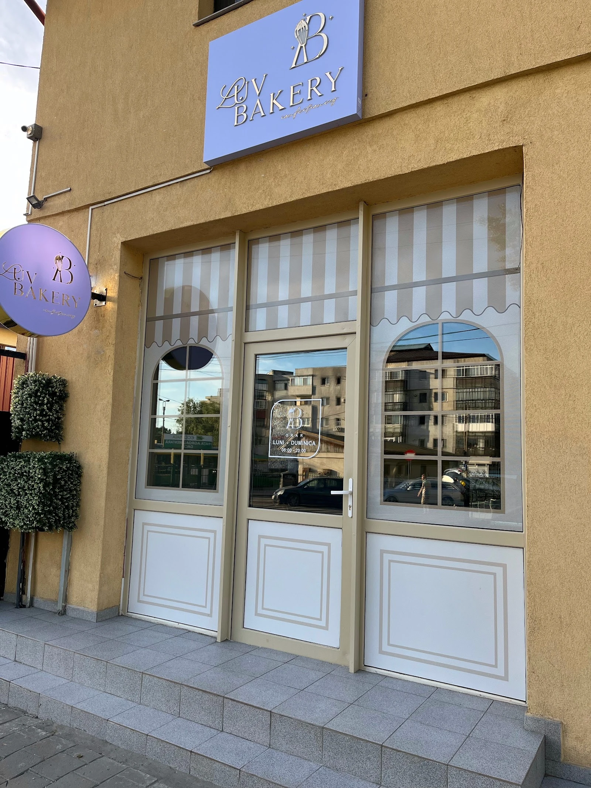
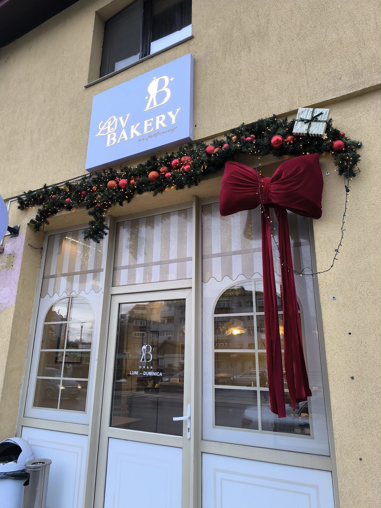

{{Patiserie · Strada Tabacului 11, Iași|Bakery · Strada Tabacului 11, Iași|Pastelaria · Strada Tabacului 11, Iași}}
{{Mango are|Mango tastes|A manga sabe}}{{gust de mango.|like mango.|a manga.}}
{{Tarte, choux, croissante umplute și deserturi cu strat crocant, de la ușa liliachie de pe Tabacului. Treci pe la vitrină sau rezervă din drum și le găsești puse deoparte.|Tarts, choux, filled croissants and desserts with a crunchy layer, behind the lilac door on Tabacului. Drop by the counter, or reserve on your way and find them set aside.|Tartes, choux, croissants recheados e sobremesas com camada estaladiça, atrás da porta lilás da Tabacului. Passe pela vitrine ou reserve a caminho e encontra-os à sua espera.}}
{{Ce e cald acum|What’s warm now|O que está quente agora}}
{{Ușa cuptorului,|The oven door,|A porta do forno,}} {{în timp real.|in real time.|em tempo real.}}
- {{Ce iese din cuptor și la ce oră|What comes out of the oven, and when|O que sai do forno, e a que horas}}{{de confirmat|to be confirmed|a confirmar}}
- {{Cel mai sigur: întrebi înainte să pleci de acasă.|Safest bet: ask before you leave home.|O mais seguro: perguntar antes de sair de casa.}}
{{Vitrina LUV|The LUV counter|A vitrine LUV}}
{{Arată bine.|Looks good.|Tem bom aspeto.}} {{Și are gust pe măsură.|Tastes even better.|E sabe ainda melhor.}}
{{Ce vezi mai jos e fotografiat la LUV. Atinge „Pune deoparte” și se adaugă la rezervare. Prețurile: de confirmat|Everything below was photographed at LUV. Tap “Set aside” and it goes into your reservation. Prices: to be confirmed|Tudo o que vê abaixo foi fotografado na LUV. Toque em «Guardar» e entra na reserva. Preços: a confirmar}}
{{Rezervă pentru ridicare|Reserve for pick-up|Reservar para levantar}}
{{Pune deoparte.|Set it aside.|Guarde já.}} {{Treci să-l iei.|Swing by for it.|Passe a buscar.}}
{{Alegi ce vrei, ziua și ora; rezervarea pleacă gata scrisă pe WhatsApp sau SMS. LUV îți confirmă dacă le are și le pune deoparte.|Pick what you want, the day and time; the reservation goes out ready-written by WhatsApp or SMS. LUV confirms they have it and sets it aside.|Escolha o que quer, o dia e a hora; a reserva segue já escrita por WhatsApp ou SMS. A LUV confirma se tem e guarda-a.}}
{{Ce spun clienții|What customers say|O que dizem os clientes}}
{{Bobul de cafea are un strat crocant „demențial”, mango are gust de mango, lămâia e acrișoară.|The coffee bean has an “insane” crunchy layer, the mango tastes of mango, the lemon is nicely tart.|O grão de café tem uma camada estaladiça «demencial», a manga sabe a manga, o limão é acidulado.}}
{{Deserturi care îți fură privirea și te cuceresc la gust: multe arome și texturi strânse într-un singur desert.|Desserts that catch your eye and win you over on taste: lots of flavours and textures packed into one.|Sobremesas que prendem o olhar e conquistam no sabor: muitos aromas e texturas numa só.}}
{{Un tort de mango și fructul pasiunii comandat aici: „impresionată de gust”.|A mango and passion fruit cake ordered here: “impressed by the taste”.|Um bolo de manga e maracujá encomendado aqui: «impressionada com o sabor».}}


{{Unde suntem|Find us|Onde estamos}}
{{Caută firma liliachie.|Look for the lilac sign.|Procure o letreiro lilás.}}
- Strada Tabacului 11, 700440 Iași
- 0724 484 557